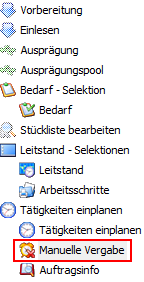
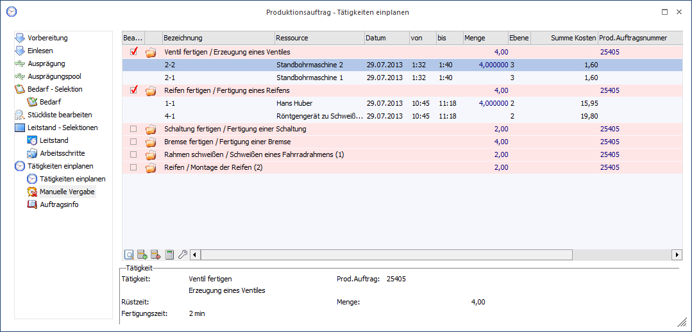
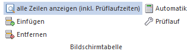
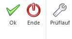

Der Bereich "Manuelle Vergabe" kann über verschiedene Wege aufgerufen werden:
ü Bei der Anlage eines Produktionsauftrags wird automatisch der Programmbereich "Produktionsauftrag - Tätigkeiten einplanen" geöffnet.
Hinweis
Die Voraussetzungen hierfür entnehmen Sie bitte dem Kapitel "Produktionsauftrag - Tätigkeiten einplanen".
Anschließend muss im Auswahlbaum der Punkt "Manuelle Vergabe" ausgewählt werden.

ü Der Bildschirm kann über den Leitstand (WinLine PPS - Produktion - Leitstand / Recalc) oder die Produktionskorrektur (WinLine PPS - Produktion - Produktionskorrektur) geöffnet werden. Hierzu wird nach dem Starten des jeweiligen Programms im Auswahlbaum "Tätigkeiten einplanen" auswählt und anschließend der Punkt "Manuelle Vergabe".


An dieser Stelle ist es möglich manuell die einzelnen Ressourcen den Tätigkeiten zuzuordnen bzw. automatisch eingeplante Ressourcen abzuändern.
Tabelle
In der Tabelle werden zunächst die einzelnen Tätigkeiten aufgeführt. Unter diesen stehen die automatisch oder manuell zugeordneten Ressourcen.
Ø Bearbeitet
An dieser Stelle kann in Form einer Checkbox bestimmt werden, ob die betreffende Tätigkeit komplett bearbeitet worden ist, d.h. ob die betreffende Tätigkeit komplett aufgeteilt wurde.
ü Die Tätigkeit wurde noch nicht komplett bearbeitet.
ü Die Tätigkeit wurde bereits komplett bearbeitet.
Ø Ordner
An dieser Stelle wird in Form eines Symbols dargestellt, ob die bereits hinterlegten Ressourcen zu der betreffenden Tätigkeit angezeigt werden.
ü Es werden alle hinterlegten Ressourcen zu dieser Tätigkeit angezeigt.
ü Es wird keine Ressource bei der Tätigkeit angezeigt.
Ø Bezeichnung
Handelt es sich um eine Tätigkeitenzeile, dann wird hier der Kurzcode der Tätigkeit gefolgt von der entsprechenden Bezeichnung angezeigt. Diese beiden Informationen werden dabei durch ein / voneinander getrennt.
Hinweis
Wenn mit Reihenfolgen gearbeitet wird, so wird diese in Klammern ebenfalls angezeigt.
Sollte es sich allerdings um eine Zeile mit einer hinterlegten Ressource handelt bzw. soll gerade eine Ressource hinterlegt werden, dann ist an dieser Stelle die Ressourcennummer zu sehen bzw. zu hinterlegen.
Ø Ressource
Hier wird die Bezeichnung der Ressource angezeigt.
Ø Datum
An diesem Datum wird die Reservierung der Ressource vorgenommen.
Ø von/bis
In dieser zu hinterlegenden Zeitspanne wird die Ressource reserviert.
Ø Ebene
An dieser Stelle wird die Stücklistenebene angezeigt, in welcher sich die Tätigkeit bzw. Ressource befindet. Dabei stellt die Ebene 1 die Stücklistenebene des Produktionsartikels selber da.
Ø Summe Kosten
An dieser Stelle werden die voraussichtlichen Kosten der Ressource ausgewiesen.
Ø Prod. Auftragsnummer
An dieser Stelle wird die Produktionsauftragsnummer angezeigt.
Tabellenbuttons

Ø alle Zeilen anzeigen (inkl. Prüflaufzeiten)
Durch Aktivierung des Buttons werden, neben den eingeplanten Ressourcen, auch die Zeiten des Prüflaufs direkt angezeigt.
Hinweis
Diese Funktion steht nur zur Verfügung, wenn mit der Kapazitätsplanung gearbeitet wird.
Ø Einfügen
Durch Auswahl dieses Buttons kann unterhalb der aktiven Tätigkeit oder Ressource eine weitere Ressource eingefügt werden.
Ø Entfernen
Durch Auswahl dieses Buttons kann die aktive Ressource entfernt werden.
Achtung
Tätigkeiten selber können nicht entfernt werden!
Ø Automatik
Für die aktive Tätigkeit werden automatisch die benötigten Ressourcen eingefügt und eingeplant.
Ø Prüflauf
Es wird ein Prüflauf (eine Vorab-Test-Reservierung) für die aktuelle Tätigkeit durchgeführt.
Hinweis
Diese Funktion steht nur zur Verfügung, wenn mit der Kapazitätsplanung gearbeitet wird.
Buttons

Ø Ok
Die vorgenommenen Änderungen werden abgespeichert und anschließend findet ein Wechsel in den Bereich "Tätigkeiten einplanen" statt.
Ø Ende
Der Programmbereich wird verlassen.
Ø Prüflauf
Durch Anwahl dieses Buttons wird ein Prüflauf (eine Vorab-Test-Reservierung) für den gesamten Produktionsauftrag durchgeführt.